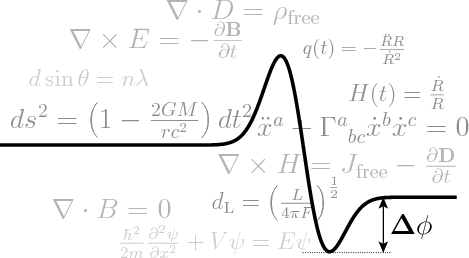
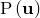

PyXPlot Users’ Guide
A Command-line Data Processing,
Graph Plotting and
Vector Graphics Suite.
Version 0.8.1

Dominic Ford, Ross Church
Email:
coders@pyxplot.org.uk
June 2010
1 Introduction to PyXPlot
1 Introduction
1.1 PyXPlot’s Heritage: Gnuplot
1.2 The Structure of this Manual
1.3 A Whirlwind Tour
1.4 Acknowledgments
1.5 License
2 Installation
2.1 System Requirements
2.2 Installation
3 First Steps With PyXPlot
3.1 Getting Started
3.2 First Plots
3.3 Comments
3.4 Splitting Long Commands
3.5 Printing Text
3.6 Axis Labels and Titles
3.7 Querying the Values of Settings
3.8 Plotting Datafiles
3.9 Plotting Many Datafiles at Once
3.10 The
replot
Command
3.11 Directing Where Output Goes
3.12 Setting the Size of Output
3.13 Plotting Styles
3.14 Setting Axis Ranges
3.15 Interactive Help
4 Performing Calculations
4.1 Variables
4.2 Physical Constants
4.3 Functions
4.4 Handling Numerical Errors
4.5 Working with Complex Numbers
4.6 Working with Physical Units
4.7 Configuring how Numbers are Displayed
4.8 Numerical Integration and Differentiation
4.9 Solving Systems of Equations
4.10 Searching for Minima and Maxima of Functions
4.11 Working with Time-Series Data
5 Working with Data
5.1 Input Filters
5.2 Reading Data from a Pipe
5.3 Including Data within Command Scripts
5.4 Special Comment Lines in Datafiles
5.5 Tabulating Functions and Slicing Data Files
5.6 Function Fitting
5.7 Datafile Interpolation
5.8 Fourier Transforms
5.9 Histograms
5.10 Random Data Generation
6 Programming and Flow Control
6.1 String Variables
6.2 Conditionals
6.3 For Loops
6.4 Foreach Loops
6.5 Foreach Datum Loops
6.6 While and Do Loops
6.7 The
break
and
continue
statements
6.8 Conditional Functions
6.9 Subroutines
6.10 The
exec
command
6.11 Shell Commands
6.12 Script Watching: pyxplot_watch
2 Plotting and Vector Graphics
1 Plotting: A Detailed Survey
1.1 The
with
modifier
1.2 PyXPlot’s Plot Styles
1.3 The
style
Keyword
1.4 Plotting Functions in Exotic Styles
1.5 Plotting Parametric Functions
1.6 Graph Legends
1.7 Configuring Axes
1.8 Gridlines
1.9 Clipping Behaviour
1.10 Labelling Graphs
1.11 Three-Dimensional Plotting
2 Producing Image Files
2.1 The
set terminal
Command
2.2 The Default Terminal
2.3 PostScript Output
2.4 Backing Up Over-Written Files
3 Producing Vector Graphics
3.1 Multiplot Mode
3.2 Linked Axes and Galleries of Plots
3.3 The
replot
Command Revisited
3.4 Adding Other Vector Graphics Objects
3.5 LaTeX and PyXPlot
3 Reference Manual
1 Command Reference
1.1 ?
1.2 !
1.3 arc
1.4 arrow
1.5 box
1.6 break
1.7 cd
1.8 circle
1.9 clear
1.10 continue
1.11 delete
1.12 do
1.13 ellipse
1.14 else
1.15 eps
1.16 exec
1.17 exit
1.18 fft
1.19 fit
1.20 for
1.21 foreach
1.22 help
1.23 histogram
1.24 history
1.25 if
1.26 ifft
1.27 image
1.28 interpolate
1.29 jpeg
1.30 let
1.31 list
1.32 load
1.33 maximise
1.34 minimise
1.35 move
1.36 plot
1.37 print
1.38 pwd
1.39 quit
1.40 rectangle
1.41 refresh
1.42 point
1.43 replot
1.44 reset
1.45 save
1.46 set
1.47 show
1.48 solve
1.49 spline
1.50 swap
1.51 tabulate
1.52 text
1.53 undelete
1.54 unset
1.55 while
2 List of Mathematical Functions
3 List of Physical Constants
4 List of Physical Units
5 List of Paper Sizes
6 Colour Tables
7 Line and Point Types
8 Configuring PyXPlot
8.1 Configuration Files
8.2 An Example Configuration File
8.3 Setting definitions
8.4 Recognised Colour Names
4 Appendices
A Other Applications of PyXPlot
A.1 Conversion of JPEG Images to PostScript
A.2 Inserting Equations in Powerpoint Presentations
A.3 Delivering Talks in PyXPlot
B Summary of Differences Between PyXPlot and Gnuplot
B.1 The Typesetting of Text
B.2 Complex Numbers
B.3 The Multiplot Environment
B.4 Plots with Multiple Axes
B.5 Plotting Parametric Functions
B.6 Displaying Times and Dates on Axes
C The
fit
Command: Mathematical Details
C.1 Notation
C.2 The Probability Density Function
C.3 Estimating the Error in
C.4 The Covariance Matrix
C.5 The Correlation Matrix
C.6 Finding 
D ChangeLog
2010 June 1: PyXPlot 0.8.1
2010 May 19: PyXPlot 0.8.0
2009 Nov 17: PyXPlot 0.7.1
2008 Oct 14: PyXPlot 0.7.0
2007 Feb 26: PyXPlot 0.6.3
2006 Sep 09: PyXPlot 0.5.8
E Index